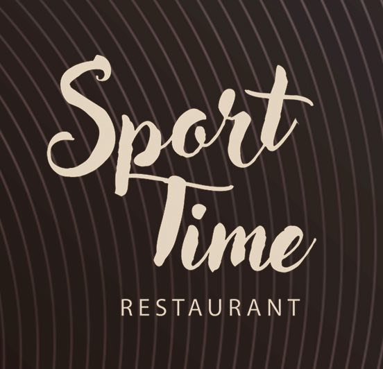
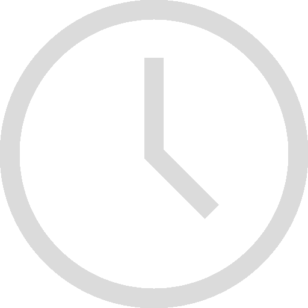

SportTime
RESTAURANT
×
Кухня
Алкогольні напої/Коктелі
Безалкогольні напої/Коктелі
Банкетне меню(Тільки по передзамовленню)
SportTime
RESTAURANT
Головна
Меню
Про нас
Головна
Меню
Про нас
Меню:
Кухня
Стартери
Перші страви
Дитяче меню
Салати
Риба та морепродукти
На сніданок
Гарніри
Телятина
Свинина
Птиця
Паста
Закуска до пива
Хліб
Десерти
Хліб на заквасці
Піца
Алкогольні напої/Коктелі
Горілка
Коньяк
Віскі
Текіла
Ром
Настоянки
Лікери
Вермути
Джин
Ігристі вина
Вина
Вина Грузії
Пиво
Шоти
Лонги
Безалкогольні напої/Коктейлі
Коктейлі безалкогольні
Чай / кава
Вода / напої
Банкетне меню
(Тільки по передзамовленню)
Гриль меню
М'ясні та рибні страви
Гарніри
Закуски
Вареники

Робочий час:
Пн-Пт: 10:00 – 22:00
Сб-Нд: 10:00 – 22:00
Телефон:
+380969883869
Адреса:
Олександрія, вул. Шевченка, 58Б, E584
×
Головна
Меню
Про нас